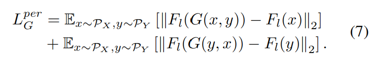

BeautyGAN：提出了makeup loss等，后续PSGAN也基于这些loss。训练数据需要成对，数据集难收集。
Paired Cycle GAN：额外添加了一个判别器
Beauty Glow
LADN
…
以上方法不适用于in the wild 图像，且不能只调节局部，比如只给眼睛上妆。
PSGAN(CVPR2020)解决了这些痛点，并且PSGAN++做了进一步改进，对比如下：
由于PSGAN++还没开源代码，所以选择了有代码的PSGAN，同时作者也提供了预训练模型。
我用默认配置参数跑了下，发现并没有得到论文中的效果，调了些参数，比如生成器和判别器的学习率，效果也不是特别好。
使用预训练模型，就能够得到论文中的效果。可能自己还需要调更多参数吧~
下面是关于PSGAN的论文要点整理。
网络结构
PSGAN的生成模块包括3部分：
- Makeup distill network(MDNet)
- Attentive makeup morphing module(AMM module)
- Makeup Apply Network(MANet)

reference image：上妆容图，假设在Y域source image：未上妆图，假设在X域
MDNet
MDNet负责从reference image 中提取makeup style，并将其用两个makeup矩阵$\beta$和$\gamma$表示。
MDNet的网络结构和Stargan(CVPR2017)中的Encoder部分相同，它的输入是reference的特征图$V_y$（MDNet的输出），经过1x1卷积得到makeup矩阵$\beta$和$\gamma$。
MDNet可以将人脸不同部位，比如嘴巴和脸颊的特征分离开来。（怎么分开？）
图中右上角展示了这一过程。
AMM module
AMM module通过考虑source和reference逐像素之间的相似性，解决了两者之间可能存在的pose,expression不一致的问题，因此经过MDNet从reference得到的$\beta$和$\gamma$不能直接拿来用，需要做进一步处理。
AMM module计算了一个attentive矩阵，记作$A$，它可以明确source和reference逐像素的映射关系，即source中的每一个像素是如何从reference对应像素通过morph得到的。
$A$是$HW*HW$的，$A_{ij}$表示source中第$i$个像素与reference中第$j$个像素之间的attentive value。
为什么是$A$是$HW*HW$的？
因为source和reference都是$HW$的，所以分别总共有$HW$个像素，又$A_{ij}$表示source中第$i$个像素与reference中第$j$个像素之间的
attentive value，因此$A$是$H*W$的。
接下来介绍怎么计算$A$。
$A$的计算需要考虑两部分：
- similar relative positions
- visual similarities
作者指出，makeup transfer应该在referen和source中的similar relative positions处进行操作，比如嘴巴，脸颊，眼睛等，且在这些位置的像素之间的attentive value应该大一些。
作者使用facial landmarks作为ancho points，来找出这些similar relative positions。方法如下：
对于一张人脸，获取了68个关键点$l_1，l_2，…，l_{68}$，用$f(.)$和$g(.)$分别表示x轴和y轴坐标，则对于每一个像素$x_i$，有：
由于在不同图片中，脸部所占图片尺寸可能不一致，因此在计算attentive value时需要对$p_i$做归一化处理，具体地，论文中使用了2-范数：$\frac{p}{||p||}$.
但有时候，即使经过上述操作找对了similar relative positions，但是它们可能有不同的语义（个人理解：比如reference的额头被头发遮盖）。
因此，作者指出，在计算$A$(或者说在计算attentive value)时，除了考虑source和reference之间逐像素的similar relative positions外，还要考虑两者之间逐像素的visual similarities.
当然，similar relative positions是最主要的，visual similarities是辅助的，这一点可以通过设置不同权重来保证。
如图(B)所示，灰色和橘色的$CHW$块代表visual similarities，绿色块代表similar relative positions。
将similar relative positions和visual similarities在通道维度上做concat操作，得到两个块，让这两个块做矩阵乘法，再对乘法结果做softmax，就得到了$A$，公式如下：
从上述操作也可以看出，$A$的计算同时考虑了similar relative positions和visual similarities。
之前的$MDNet$已经从reference中提取出来makeup style，并用$\beta$和$\gamma$表示，但由于pose和expression不同等原因，导致不能直接用。因此需要用AMM module对其做一些处理。
现在已经有了attention matrix $A$，将其与$\beta$和$\gamma$结合，就能得到能够应用在source上的makeup style，即$\beta’$和$\gamma’$：
$A_{ij}$是1*H*W的，$\gamma$是1*H*W的，因此上述公式相当于向量内积，得到的$\gamma_i’$是一个数；同理，$\beta_j’$也是一个数。
总共有$HW$个像素，因此$\beta’$和$\gamma’$的长度为HW，可reshape到$1H*W$。
然后，$\beta’$和$\gamma’$的shape被广播为$CHW$(复制C次，再concat起来)，就得到了$B’$和$ Γ’$，它们将被输入到MANet。
###MANet
MANet使用了类似Stargan的Encoder-Decoder架构(之前的MDNet只使用了Stargan的Encoder，但MDNet和MANet的Encoder只是结构一样，并不共享参数)。
在MANet的Ecoder中，使用Instance Normalization将特征图映射到正态分布。
$B’$和$ Γ’$从Bottleneck处输入MANet，通过一个线性变换给source加上reference的makeup style，得到$V_x’$：
$$V_x’= Γ’V_x+B’$$
最后，将$V_x’$输入到MANet后续的Decoder部分，产生最终的makeup transfer结果。
损失函数
loss沿用了BeautyGAN中的loss。
1. Adversarial loss
2. Cycle consistency loss
3. Perceptual loss

4. Makeup loss.
总的loss如下：